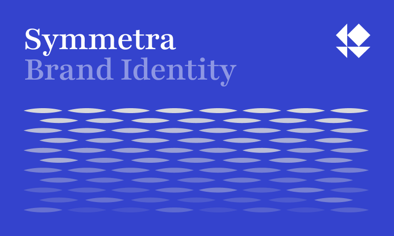
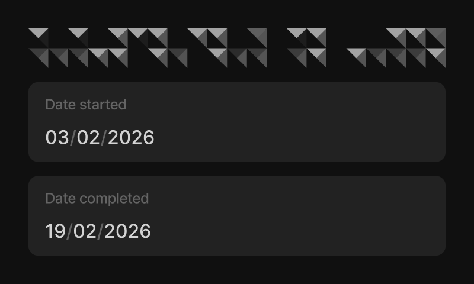
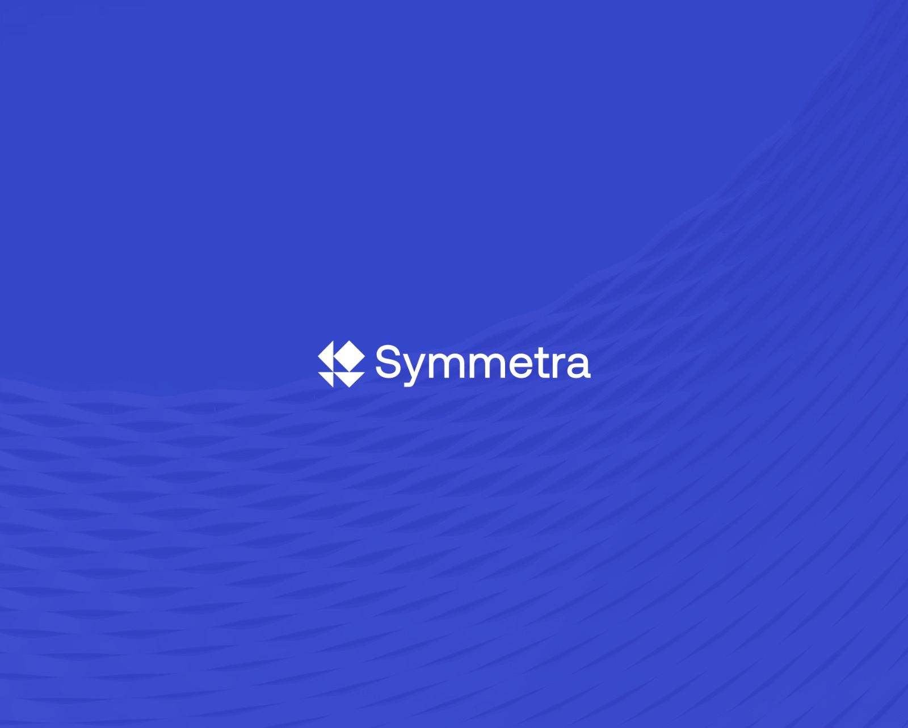
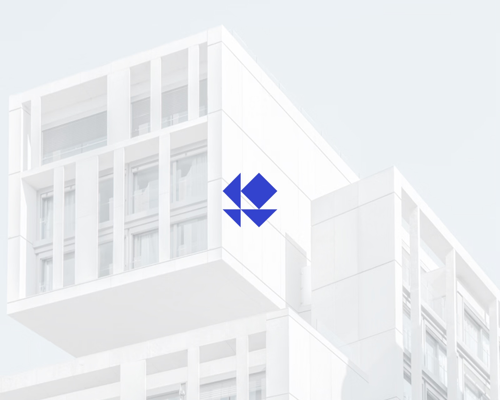
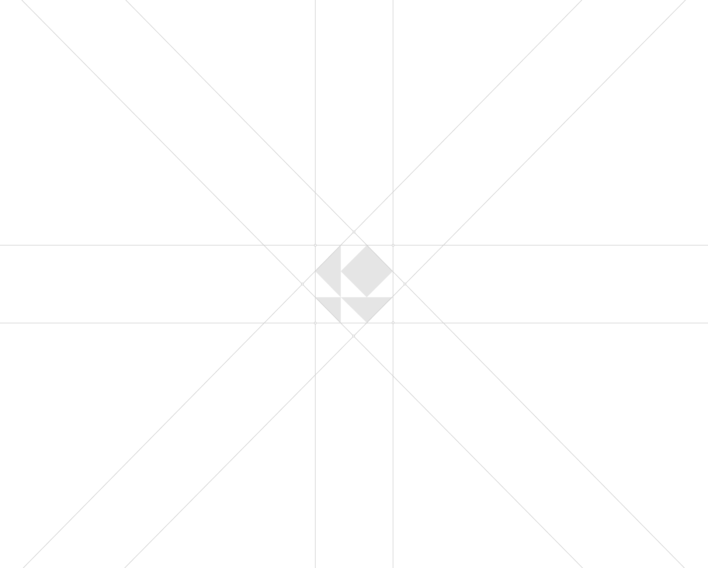
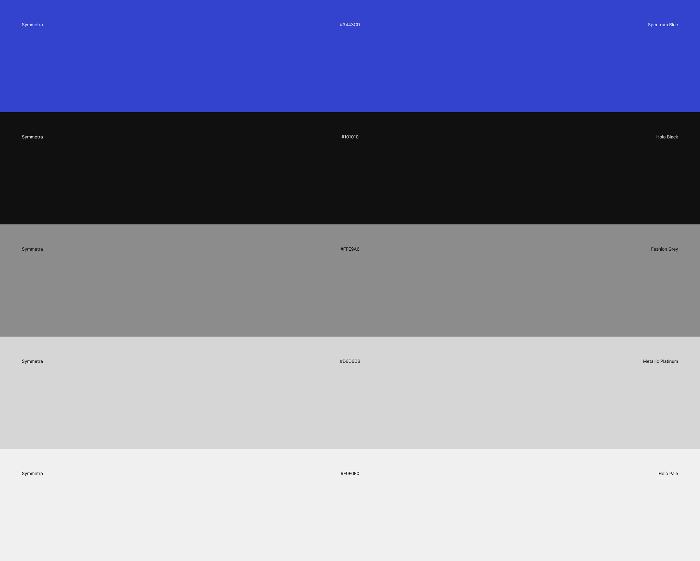

Symmetra
Brand Design
Symmetra is an architectural design studio built on the belief that balance is never accidental. Rooted in structure, proportion, and negative space.
This Brand Identity is a reflection of that clean and modern direction.



